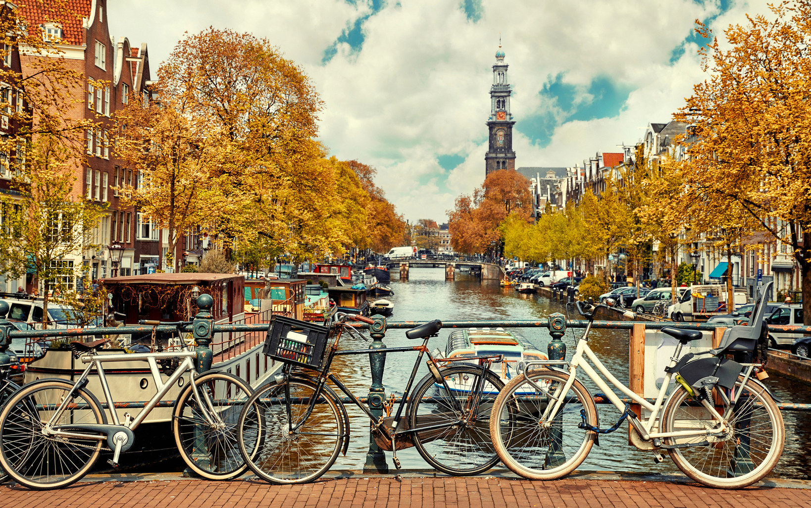

1.Амстердам
Амстердам— столица Нидерландов и один из крупнейших исторических городов Европы. Город-космополит, крупный культурный и финансовый центр. Кто-то едет сюда за хорошим шоппингом, другие жаждут увидеть уникальные музейные коллекции. Романтики наслаждаются прогулками по средневековым улочкам вдоль колоритных каналов, а молодёжь — атмосферой свободолюбия.
Нидерланды и Амстердам поражают прочной связью времён и поколений. Здесь ощущается, насколько глубоко философия протестантской этики в сочетании с духом капитализма за пять столетий стала неотъемлемой частью голландского общества, не конфликтуя со смелостью и свободой новых поколений. Старинный облик узких улочек филигранно соседствует с новейшей урбанизацией и современной архитектурой, а ночная жизнь — с богатой культурной музейной программой.